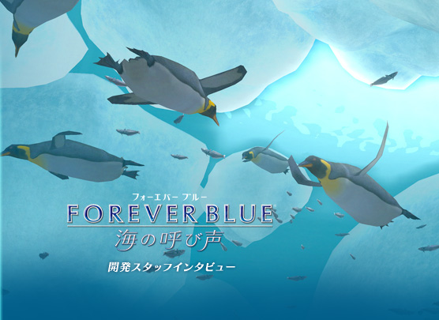
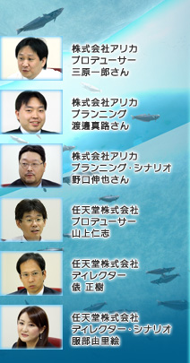
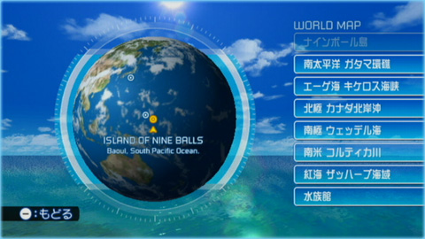
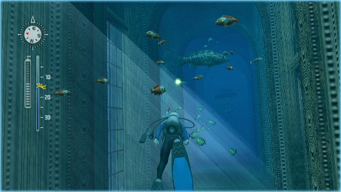
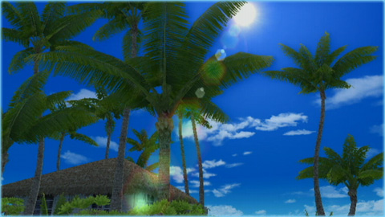
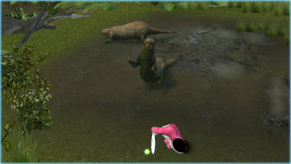

N.O.M
『FOREVER BLUE 海の呼び声』では、世界中のさまざまな場所がダイビングできるようになりました。
山上
開発が始まったときに、「世界に行こうね」というのは暗黙の了解としてスタッフにありました。
映像的な変化を求めて川にも舞台を広げましょうというアイデアを聞いたときは、ちょっとビックリしました。けど、「川に行けば、アロワナみたいな淡水魚もたくさん出すことができますよ」ということを聞いて、確かにそれはアリだなと。あと、北極や南極のような寒い海も、本来ダイビングではなかなか潜ることができない場所なので、それをゲームで楽しめるようにする価値は大きいだろうと。
たんに世界を回るのではなく、そういった極限の世界を盛り込むことによって、より変化に富んだダイビングを楽しめるのではないかと考えました。

渡邊
山上さんがおっしゃるとおり、ここは外せないスポットだろうという風に分類していったところ、かなり早い段階で、ダイビングスポットは決まりましたね。
普通は泳がない川を泳げるというゲームならではの部分も楽しんでいただければと思いますね。
三原
他には、世界には「赤い色の海」があるそうで、そこも候補には挙がっていたんですが、ほぼ魚がいないということでボツになったりしましたね。
渡邊
エーゲ海や紅海というダイバーにとっては聖地と言われるところですので、資料には事欠きませんでした。ダイバー同士の仲間内で海の感想なども聞いて参考にしています。
たとえば紅海の名物になっている「ソフトコーラル」という柔らかいモソモソと動くサンゴがあるんですが、ゲームの中でもスタート地点にわんさか置いてあります。
三原
もちろん、こういうのって大丈夫ですかとか、ここって泳いでも大丈夫ですかというような世界の海の考証は、調査したりということはしています。
渡邊
設定的には多少無理があるかもしれませんが、「海の中にお城があったら素敵だよね？」というようなところからスタートしている部分もありますので、あとはどうやって映像やストーリーで納得できるようにするかというところでしたね。

俵
古代の海を出そうかという案もありましたよね（笑）。
三原
ゲームのどこかに、ちょっとだけその名残があるかもしれません。現実的な海のロマンの範囲で（笑）。
N.O.M
活動範囲が陸上へと大きく広がりました。
三原
本当は海からバシャバシャそのまま上陸するところまでやりたかったんです。それは実現できなかったんですが、それでも結構やれることが広がって良かったかなと思っています。
渡邊
開発で注力するべきバランスというのがありますので難しいところです。これも海外からの前作へのご意見で、海中は素晴らしいけど陸上は……というのがありまして。
三原
担当の人間を中心に今度は見てろよと意気込んだ部分もありまして。私は何もしていませんが。
山上
特にアリカさんがこだわっていらっしゃったのは、木漏れ日の表現ですね。拠点となるナインボール島で、視線を上げると木の葉の合間から太陽が見えるんですが、その処理にものすごい気合いを入れられていて。このあたり、アリカさんの陸上にかける執念のようなものを感じていただければ（笑）。
陸上の部分をこだわることによって、上陸という新しい要素も入れてもらうことができまして、さまざまなその地域に棲む動物ともふれあえるという副次的な効果が得られたのは良かったかなと思っています。

渡邊
ずっと海の中だけですと、それが当たり前になっちゃうんですけど、陸があることによってメリハリが出ると言いますか、より海を意識できるようになったかなとも思います。
服部
地上の何がいいって、可愛い動物が増えたのはうれしかったですね。カワウソにお魚をあげられたりするんですけど、パシッと手で取って食べるんですよ。

三原
そんな指定をした覚えはないんですけど、デザイナーには可愛くしてねとだけ言っていたら、いつの間にか白刃取りをするようになってました（笑）。
渡邊
動物たちの生態を紹介するムービーもあり、解説付きの長いもので30個以上はあります。
前作は比較的お上品な海だったんですが、より海の生命観と言うか、海が生きていることを表現するために、食べたり食べられたり、子供を産んで育てたりといった営みの部分は避けて通れないと。そこで今回は生態紹介ムービーで、クジラの補食シーンですとか、ペンギンの子育てなどをしっかり見せようということもありました。
三原
マッコウクジラとダイオウイカの対決シーンはたぶん、世界初の映像化じゃないかと思うんですが（笑）。
野口
実際にマッコウクジラの体にダイオウイカらしき吸盤の跡などが残っているという話がありますので、その説を元にしてはいるんですが。
渡邊
そういう決定的な瞬間は、ぜひ写真にとって残していただければと。ちなみに対決の決着はつきません。永遠のライバルなので（笑）。